-
Warning
Do not immediately put broiler parts in water as it may cause them to warp.
4 Hour Cleaning
-
1Step
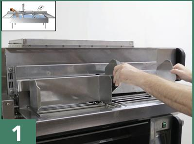
-
2Step
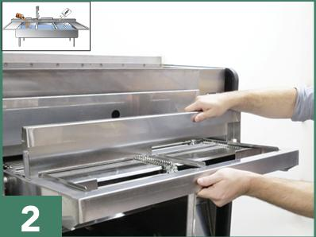
-
3Step
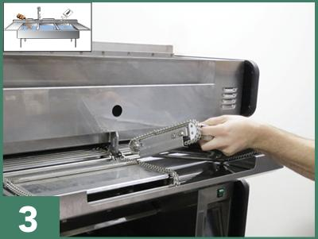
-
4Step
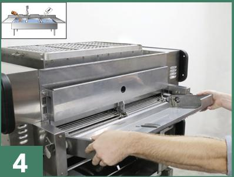
Daily Cleaning
-
5Step
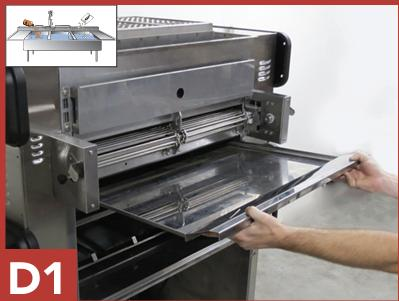
-
6Step
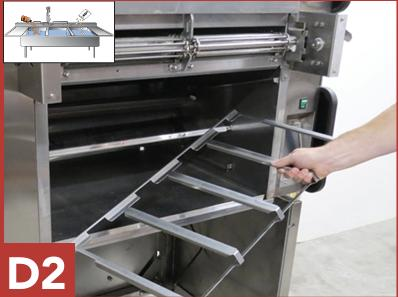
-
7Step
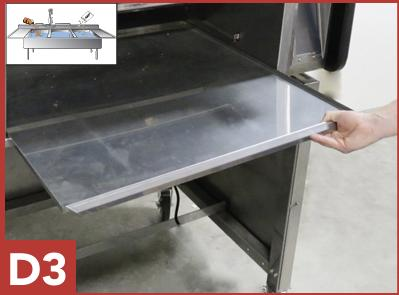
-
8Step
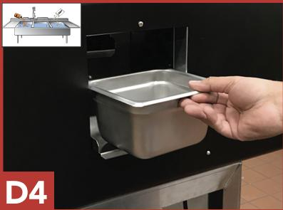
-
9Step
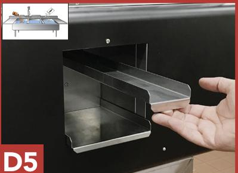
-
10Step
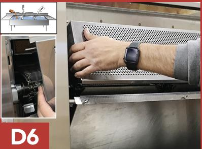
-
11Step
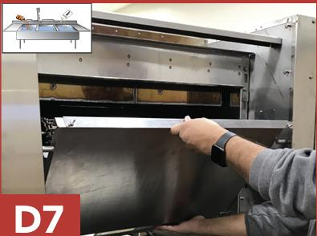
-
12Step
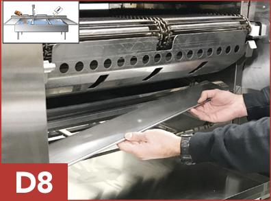
-
13Step
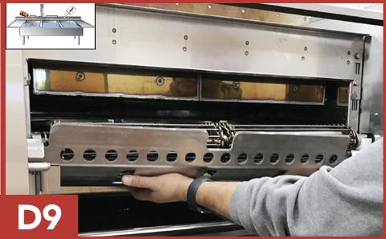
-
14Step
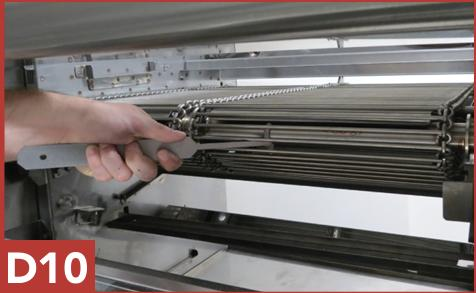
-
15Step
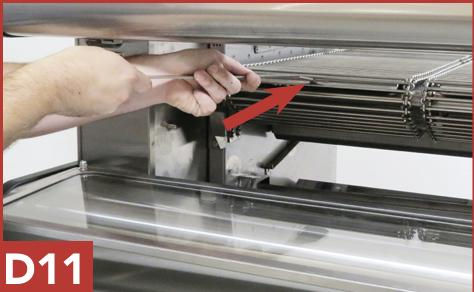
-
16Step
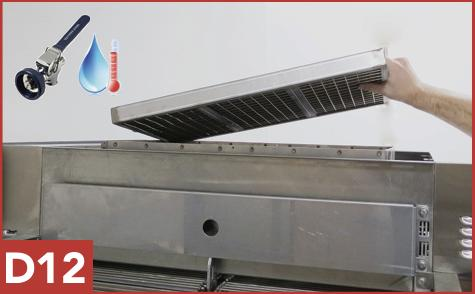
-
17Step
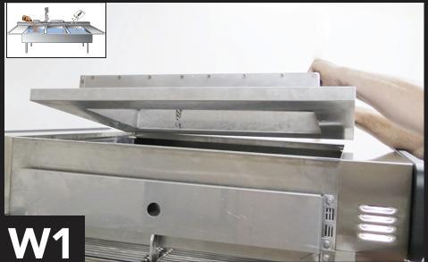
-
18Step
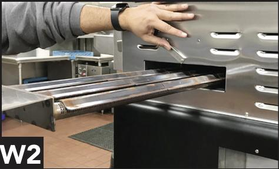
-
19Step
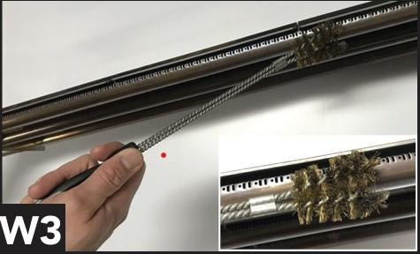
Monthly Cleaning
-
20Step
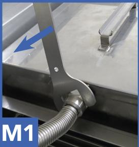
-
21Step
-
22Step
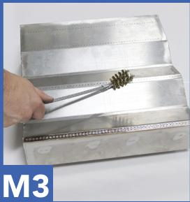
-
23Step
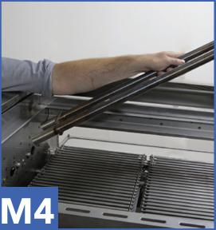
-
24Step
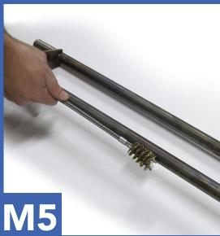